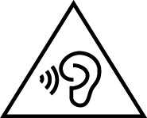
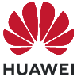

Güvenlik bilgileri
Bu belge mobil iletişim cihazlarının güvenli şekilde çalıştırılmasıyla
ilgili önemli bilgiler içerir. Bu bilgilerin bir kısmı cihazınız için
geçerli olmayabilir.
Güvenli ve doğru çalıştırmayı
sağlamak ve cihazın uygun şekilde nasıl elden çıkarılacağını öğrenmek
için, cihazınızı kullanmadan önce lütfen tüm güvenlik bilgilerini
dikkatlice okuyun.
Elektronik cihaz
Cihazın kullanılması yasaksa cihazı kullanmayın. Cihazı kullanmayın; bu, tehlikeye veya diğer elektronik cihazlarla çakışmaya neden olur.
Tıbbi ekipmanla çakışma
- Hastaneler ve sağlık tesisleri tarafından belirtilen kurallara ve mevzuata uyun. Cihazınızı, yasaklanan yerlerde kullanmayın.
- Bazı kablosuz cihazlar, işitme cihazlarının veya kalp pillerinin performansını etkileyebilir. Daha fazla bilgi için hizmet sağlayıcınıza danışın.
- Kalp pili üreticileri, kalp pili ile olası bir çakışmayı önlemek için bir cihaz ile bir kalp pili arasında en az 15 cm'lik bir mesafenin korunmasını tavsiye etmektedir. Kalp pili kullanıyorsanız, cihazı kalp pilinin karşı tarafında tutun ve ön cebinizde taşımayın.
- Bu cihaz tıbbi bir cihaz değildir. Sağlıkla
ilgili uygulamalar, sağlık durumunu tahmin, teşhis ya da tedavi etmek
üzere tasarlanmamıştır.
İşitme ilkeleri
-  İşitme hasarlarını önlemek için, müziği uzun süre yüksek sesle dinlemeyin.
- Kulaklığın yüksek ses düzeyinde kullanılması işitme duyunuza zarar verebilir. Bu riski azaltmak için, kulaklık ses ayarını güvenli ve rahat bir düzeye düşürün.
- Araç kullanırken yüksek düzeylere maruz kalma dikkat dağılmasına neden olabilir ve kaza yapma riskinizi yükseltir.
Yanıcıların ve patlayıcıların bulunduğu alanlar
- Cihazı yanıcı ya da patlayıcı maddelerin
depolandığı yerlerde (örneğin benzin istasyonu, yağ deposu veya kimyasal
madde fabrikası) kullanmayın. Cihazınızı bu ortamlarda kullanmanız
patlama ya da yangın riskini artırır.
- Patlama potansiyeli olan ortamlarda cihazınızı
kapatın. Yangın tehlikesi oluşturacağından, pili çıkartmayın. Ayrıca,
metin veya sembollerle gösterilen talimatlara uyun.
- Cihazı kutu içinde yanıcı sıvılar, gazlar veya patlayıcılarla birlikte depolamayın ya da nakletmeyin.
Trafik güvenliği
- Cihazı kullanırken yerel yasalara ve yönetmeliklere uygun hareket edin. Kaza riskini azaltmak için, araç kullanırken kablosuz cihazınızı kullanmayın.
- Sürüşe konsantre olun. İlk sorumluluğunuz güvenli sürüştür.
- Araç sürerken cihazı tutmayın. Eller serbest aksesuarlarını kullanın.
- Bir arama yapmanız ya da yanıtlamanız gerektiğinde, önce aracınızı güvenli biçimde kenara çekip park edin.
- RF sinyalleri motorlu araçların elektronik sistemlerini etkileyebilir. Daha fazla bilgi için araç üreticisine danışın.
- Motorlu bir araçta, cihazı hava yastığının üzerine veya hava yastığı açılma bölgesine koymayın. Bu, hava yastığı açıldığındaki şiddetli kuvvetten dolayı sizi yaralayabilir.
- Uçak içindeyken ya da uçağa binmeden hemen
önce cihazınızı yalnızca birlikte verilen talimatlara göre kullanın.
Uçak içerisinde kablosuz cihaz kullanımı kablosuz ağlarda aksamalara
neden olabilir, uçağın çalıştırılmasıyla ilgili tehlike arz edebilir
ya da yasa dışı olabilir.
- Dikkatinizi dağıtabileceğinden ve trafik kazasına
neden olabileceğinden, bisiklet sürerken, koşarken ya da yürürken
kulaklık kullanmayın.
Çalışma ortamı
- Cihazınızın parçalarına ya da iç devrelerine
gelebilecek hasarı önlemek için, cihazı tozlu, dumanlı, nemli ya da
kirli ortamlarda veya manyetik alanların yakınında kullanmayın.
- Cihazınızı yıldırım çarpmasının neden olabileceği
potansiyel tehlikeye karşı korumak için gök gürültülü fırtınalı havalarda
kullanmayın.
- Cihazı ve aksesuarları, doğrudan güneş ışığından
uzak, iyi havalandırılan ve serin bir alanda tutun. Cihazınızı havlu
ya da başka nesnelerle sarmayın veya kapatmayın. Cihazı kutu ya da
poşet gibi zayıf ısı yayılımı olan bir kaba koymayın.
- Bu cihaz ve şarj cihazı yüzey sıcaklığıyla
ilgili güvenlik standartlarına uymaktadır. Cihazınız ısınabilir; bu
normal bir olaydır. Cildinizi uzun süreli olarak sıcak yüzeye maruz
bırakmanız rahatsızlığa ya da (kırmızı noktalar ya da renklenmeler
gibi) düşük sıcaklıklı yanma belirtilerine neden olabilir. Isı hissinde
bozukluk yaşıyorsanız lütfen dikkatli davranın. Cihaz uzun süre boyunca
sürekli olarak kullanıldığında ya da şarj cihazına uzun süre bağlı
kaldığında, cihaza ya da şarj cihazına dokunmaktan kaçının. Örneğin,
şarj olurken cihazı vücudunuzun veya yorgan ya da yastığınızın altına
koymayın.
- Cihazınızı uzun süre boyunca doğrudan güneş ışığına maruz bırakmayın (bir aracın ön göğsü gibi).
- Cihazınızı ya da aksesuarlarınızı yangın ya da elektrik çarpması tehlikelerinden korumak için yağmur ve nemden kaçının.
- Cihazı, ısıtıcı, mikrodalga fırın, soba, su ısıtıcı, radyatör ya da mum gibi ısı ve ateş kaynaklarından uzak tutun.
- Kulaklığın ya da hoparlörün yakınına iğne gibi sivri metal nesneler koymayın. Kulaklık bu nesneleri çekebilir ve yaralanmayla sonuçlanabilir.
- Cihazınızın kamera flaşını doğrudan insanların ya da evcil hayvanların gözüne tutmayın. Aksi halde gözlerde geçici görme kaybı ya da hasar ortaya çıkabilir.
- Tekrar eden eylemleri (örneğin, oyun oynarken)
gerçekleştirirken, ellerinizde, kollarınızda, bileklerinizde, omuzlarınızda,
boynunuzda ya da vücudunuzun diğer bölgelerinde zaman zaman rahatsızlık
hissi yaşayabilirsiniz. Herhangi bir rahatsızlık hissetmeniz durumunda,
kullanımı durdurun ve bir doktora danışın.
- Karanlık ya da değişken ortamlarda ekrana
bakmayın. Göz yorulmasını önlemek için ekrana çok yaklaşmayın ya da
uzun süre boyunca ekrana bakmayın. Herhangi bir rahatsızlık hissetmeniz
durumunda, kullanımı durdurun ve bir doktora danışın.
- Boya, metal ya da cihazda kullanılan başka
materyallere karşı alerjiniz varsa, ciltte alerji ya da diğer rahatsızlıkları
yaşayabilirsiniz. Bunların meydana gelmesi halinde kullanımı durdurun
ve bir doktora danışın.
- Kabloları vücudunuzun etrafına ya da nesneleri
kapsayacak şekilde sarmayın. Kendinizde ya da başkalarında olabilecek
yaralanmalara karşı, yürürken ya da hareket ederken etrafınıza dikkat
edin
- Kendinizde yaralanmaya neden olmamak ya
da cihazınıza hasar vermemek için, cihazı cebinizde, kemerinizde ya
da kol bandınızda taşırken dikkatli olun.
- Çocukların ya da evcil hayvanların cihazı veya aksesuarları ısırmasına ya da emmesine izin vermeyin. Bu, hasar ya da patlamayla sonuçlanabilir.
Çocuk güvenliği
- Çocukların güvenliğiyle ilgili tüm önlemlere uyun. Çocukların cihazla ya da aksesuarlarıyla oynamasına izin vermek tehlikeli olabilir. Cihaz, yutma tehlikesine yol açabilecek çıkarılabilir parçalara sahiptir. Çocuklardan uzak tutun.
- Cihaz ve aksesuarlarının çocuklar tarafından kullanımı amaçlanmaz. Çocuklar cihazı yalnızca yetişkin gözetiminde kullanmalıdır.
Aksesuarlar
- Onaylanmamış ya da uyumsuz güç adaptörü,
şarj cihazı ya da pil kullanılması cihazınıza zarar verebilir, ömrünü
kısaltabilir ya da yangına, patlamaya veya başka tehlikelere neden
olabilir.
- Yalnızca bu modelle kullanımı cihaz üreticisi tarafından onaylanmış aksesuarları tercih edin. Diğer tipteki aksesuarların kullanımı garantiyi geçersiz kılabilir, yerel yönetmeliklerle yasaları ihlal edebilir ve tehlikeli olabilir. Lütfen onaylanmış aksesuarların, bulunduğunuz bölgede temin edilip edilemeyeceği konusunda bilgi almak için satıcınıza danışın.
Şarj cihazı güvenliği
- Cihazı şarj ederken, güç adaptörünün cihazlara
yakın bir fişe takıldığından ve kolaylıkla erişilebilir olduğundan
emin olun.
- Kullanımda olmadığı zaman şarj aletini
elektrik prizinden ve cihazdan çekin.
- Şarj cihazını düşürmeyin veya darbeye
neden olmayın.
- USB kablosunu peş peşe veya aşırı bir şekilde
bir yerinden bükmeyin. USB kablosunu doğru konumda takın.
- USB kablosunu açılı bir şekilde takmayın ve
kablonun ucundaki USB bağlantı noktasını eğmeyin veya yerini değiştirmeyin.
USB kablosu ve bağlantı noktası düzenli olarak kontrol edilmelidir.
Herhangi bir hasar belirtisi varsa, kabloyu kullanmayı hemen durdurun.
- Cihazda paslanma, solma, erime, yanma ve başka
hasarlara neden olabilecek, hatta yangına neden olabilecek kısa devreleri
önlemek için, şarj bağlantı noktasını sıvılardan, tozdan, birikintilerden
ve diğer iletken maddelerden uzak tutun.
- Şarj cihazı fişi, kılıfı ya da kabı hasar
görmüşse, kullanımını hemen durdurun. Kullanıma devam edilmesi elektrik
çarpmasına ya da yangına neden olabilir.
- Güç kablosuna ıslak ellerle dokunmayın
veya şarj cihazını çıkarmak için güç kablosundan asılmayın.
- Cihaza veya şarj cihazına ıslak elle
dokunmayın. Bu, kısa devreye, hatalı çalışmaya ya da elektrik çarpmasına
yol açabilir.
- Şarj cihazınızın suya, diğer sıvılara veya aşırı neme maruz kalması durumunda cihazı incelenmesi için yetkili bir Huawei servis merkezine götürün.
- Şarj cihazının IEC60950-1/EN60950-1/UL60950-1'deki
Madde 2.5'in gerekliliklerini karşıladığından ve ulusal ya da yerel
standartlara göre test edilip onaylandığından emin olun.
- Cihazı yalnızca USB-IF logosu ya da
USB-IF uyum programı yerine getirme özelliği taşıyan ürünlere bağlayın.
Pil güvenliği
- Pil kutuplarını, anahtar, mücevher ya da diğer metal malzemeler gibi iletkenlere bağlamayın. Bu, pilde kısa devreye ve yaralanmaya ya da yanığa neden olabilir.
- Pili aşırı sıcaktan ve doğrudan güneş ışığından uzak tutun. Mikrodalga fırın, soba ya da radyatör gibi ısıtma cihazlarının üstüne veya içine koymayın. Aşırı ısınırsa piller patlayabilir.
- Pilde değişiklik yapmaya ya da yeniden üretmeye, içine yabancı nesne sokmaya veya sıvı ya da başka sıvılara batırmaya veya maruz bırakmaya çalışmayın. Bu, yangın, patlama ya da diğer tehlikelere yol açabilir.
- Pil sızdırırsa, elektrolitin cildiniz ya da gözlerinize doğrudan temas etmediğinden emin olun. Elektrolit cildinize temas ederse veya gözünüze sıçrarsa, hemen temiz suyla gözlerinizi yıkayın ve bir doktora danışın.
- Şarj etme veya depolama sırasında pilde şekil
değişmesi, renk değişimi ya da aşırı ısınma olması durumunda veya
cihaz bekleme süresi belirgin şekilde kısalmışsa, pil hasar görebilir.
Kullanıma devam edilmesi pilin akmasına, yangına ya da patlamaya yol
açabilir.
- Patlayabilecekleri için pilleri ateşe atmayın. Hasarlı piller de patlayabilir.
- Bitmiş pilleri yerel yönetmeliklere uygun olarak elden çıkarın. Hatalı pil, yangın, patlama ya da diğer tehlikelere yol açabilir.
- Çocukların ya da evcil hayvanların pili ısırmasına veya emmesine izin vermeyin. Bu, hasar ya da patlamayla sonuçlanabilir.
- Pili parçalamayın ya da delmeyin veya yüksek dış basınca maruz bırakmayın. Bu, kısa devreye ya da aşırı ısınmaya yol açabilir.
- Pilin yanlış bir modelle değiştirilmesi patlamaya
neden olabilir.
- Bu cihazda yerleşik bir pil vardır. Pili kendiniz değiştirmeye çalışmayın. Aksi halde cihaz düzgün çalışmayabilir veya pil zarar görebilir. Kendi güvenliğiniz ve cihazınızın düzgün çalıştığından emin olmak için pilin değiştirilmesi için kesinlikle yetkili bir Huawei servis merkezine başvurmanızı öneririz.
- Pili sadece uygun şarj sisteminde kullanın.
Pili sadece uygun nitelikteki bir pille değiştirin. Koşullara uymayan
bir pil ya da şarj cihazının kullanımı yangına, patlamaya, akmaya
veya başka tehlikelere yol açabilir.
- Pili parçalara ayırmayın ya da açmayın, ezmeyin, bükmeyin, şeklini bozmayın, delmeyin veya kesmeyin. Aksi halde, elektrolit sızıntısına, aşırı ısınmaya, yangına ya da patlamaya yol açabilir.
- Pil kutuplarını lehimlemeyin veya pili sökmeyin. Bu, elektrolit sızıntısına, aşırı ısınmaya, yangına ya da patlamaya yol açabilir.
Temizlik ve bakım
- Cihazı ve aksesuarları kuru tutun. Mikrodalga fırın ya da saç kurutma makinesi gibi harici bir ısı kaynağıyla kurutmaya çalışmayın.
- Cihazınızın uzun süre şarj edilmesi ya da
pilin uzunca bir süre kullanılmaması pilin ömrünü ve performansını
azaltabilir.
- Cihazınızı ya da aksesuarları aşırı sıcak veya soğuğa maruz bırakmayın. Bu ortamlar doğru çalışmayı engelleyebilir ve yangın ya da patlamaya yol açabilir.
- Cihazın hatalı çalışmasına, aşırı ısınmaya, yangına ya da patlamaya yol açabilecek çarpmaları engelleyin.
- Cihazı temizlemeden veya bakım yapmadan önce kullanmayı bırakın, tüm uygulamaları durdurun ve bağlı olan tüm kabloları çıkarın.
- Cihazı ya da aksesuarları temizlemek için herhangi bir kimyasal deterjan, toz veya diğer kimyasal maddeleri (alkol ve benzin gibi) kullanmayın. Bu maddeler, araçlarda hasara neden olabilir veya yangın tehlikesi ortaya çıkarabilir. Cihazı ve aksesuarları temizlemek için temiz, yumuşak ve kuru bir bez kullanın.
- Cihazın manyetik alanı manyetik şeride zarar
verebileceğinden, manyetik şeritli kartları (banka kartları gibi)
uzun süre boyunca cihazla temas halinde bırakmayın.
- Cihazı ve aksesuarlarını sökmeyin ya da yeniden üretmeyin. Aksi halde garanti geçersiz kılınacak ve üreticinin hasara yönelik sorumluluğu ortadan kalkacaktır. Hasar durumunda, yardım ya da onarım için yetkili bir Huawei servis merkezine başvurun.
- Cihazınız sert bir nesnenin çarpması ya da güçlü bir darbe nedeniyle hasar görmüşse cihaza dokunmayın ya da kırılan parçaları çıkarmaya çalışmayın. Cihazı kullanmayı hemen bırakın ve yetkili bir Huawei servis merkezine başvurun.
- Doğru pozisyonda takıldıklarından emin olmak
için, SIM kartı, bellek kartı ya da veri kablosu takarken dikkatli
olun. Veri kaybına veya cihazda ya da aksesuarlarında hasara neden
olabileceğinden, veri aktarımı sırasında veri kablosunu çıkarmayın.
Ağ Bağlantısı
Bazı özellikler bağlı ağ türüyle ilgili olabilir. Lütfen kullanmadan önce yerel ağ bağlantısını sağlayın.
Acil durum aramaları
Acil durum aramalarının kullanılabilirliği,
cep telefonu şebekenizin kalitesine, hizmet sağlayıcı politikasına
ve yerel yasalarla yönetmeliklere bağlıdır. Tıbbi acil durumlar gibi
önemli iletişimler için yalnızca cihazınıza güvenmeyin. Şebeke sinyalinin
olmadığı ya da şebeke sinyalinin zayıf olduğu bölgelere
gitmeden önce, acil durum hizmetleriyle iletişime geçmek için alternatif
bir yöntem planlamanız gerekir.
Arama fonksiyonu olan cihazlar için geçerlidir.
Çevresel koruma
- Cihaz ile güç adaptörü, kulaklık ve pil gibi aksesuarları (dahilse) ev atıklarıyla birlikte elden çıkarılmamalıdır.
- Cihazın ve aksesuarlarının elden çıkarılması yerel yönetmeliklere tabidir. Uygun toplamaya ve geri dönüşüme destek verin.
Kişisel Bilgi ve Veri Güvenliği
Bazı işlevlerin veya üçüncü taraf uygulamaların cihazınızda kullanılması kişisel bilgilerin veya verilerin kaybedilmesine veya başkalarının erişimine açık hale gelmesine yol açabilir. Kişisel bilgilerinizi korumaya yardımcı olması için aşağıdaki önlemleri alın:
- İzinsiz kullanımı önlemek için cihazınızı güvenli bir yere koyun.
- Cihazınızın ekranını kilitlenecek şekilde ayarlayın ve açmak için bir şifre veya kilit açma şekli oluşturun.
- SIM kartınızda, bellek kartınızda veya cihazınızın belleğinde saklanan kişisel bilgileri periyodik olarak yedekleyin. Farklı bir cihaza geçerseniz, eski cihazınızdaki kişisel bilgileri taşıdığınızdan veya sildiğinizden emin olun.
- Cihazınıza virüs bulaşmasını önlemek için tanımadığınız kişilerden gelen mesajları ve e-postaları açmayın.
- Cihazınızı internette gezinmek için kullandığınızda, kişisel bilgilerinizin çalınma riskini önlemek için güvenlik riski oluşturabilecek web sitelerini ziyaret etmeyin.
- Taşınabilir Wi-Fi ortak erişim noktası veya Bluetooth gibi hizmetler kullanıyorsanız yetkisiz erişimi önlemek için şifreler ayarlayın. Kullanılmadıkları zamanlarda bu hizmetleri kapatın.
- Cihaz güvenlik yazılımını yükleyin ve düzenli olarak virüs taraması yapın.
- Üçüncü taraf uygulamaları yasal bir kaynaktan edindiğinizden emin olun. İndirilen üçüncü taraf uygulamaları virüs taramasından geçirilmelidir.
- Huawei veya yetkili üçüncü taraf uygulama sağlayıcıları tarafından yayınlanmış güvenlik yazılımları veya yamalarını yükleyin.
- Cihazınızı güncelleştirmek için onaylanmamış üçüncü taraf yazılımı kullanırsanız cihazınıza zarar verebilir ve kişisel bilgilerinizi tehlikeye atabilirsiniz. Cihazınızın çevrimiçi güncelleme özelliğinden yararlanarak veya Huawei'den cihaz modelinize uygun resmi güncelleme paketlerini indirerek güncelleme yapmanız önerilir.
- Bazı uygulamalar konum bilgileri gerektirir ve bunları iletir. Sonuç olarak bir üçüncü taraf konum bilginizi paylaşabilir.
- Bazı üçüncü taraf uygulama sağlayıcıları ürün ve hizmetlerini iyileştirmek için cihazınızdan algılama ve tanı bilgileri toplayabilir.
Elden çıkarma ve geri dönüşüm bilgisi
Ürününüzün, pilinin, kitapçığının
ya da ambalajının üzerinde çarpı işareti bulunan tekerlekli çöp kutusu
sembolü, çalışma ömürlerinin sonunda farklı atık toplama noktalarına
götürülmeleri gerektiği anlamına gelir; bunlar ev çöplerinin normal
atık akışıyla birlikte imha edilmemelidir. Ekipmanın belirlenmiş bir
toplama noktasını ya da atık elektrik ve elektronik ekipmanların (AEEE)
ve pillerin yerel kanunlara göre ayrı olarak geri dönüşümü hizmetini
kullanarak atılması kullanıcının sorumluluğudur.
Ekipmanınızın düzgün şekilde
toplanması ve geri dönüşümü AEEE atığının kıymetli materyaller muhafaza
edilecek ve insan sağlığını ve çevreyi koruyacak şekilde geri dönüşümünün
yapılmasını sağlamaya yardımcıdır; çalışma ömrünün sonunda uygun olmayan
şekilde işlenmesi, kazara kırılması, hasar görmesi ve/veya uygun olmayan
şekilde geri dönüşümünün yapılması sağlığa ve çevreye zararlı olabilir.
AEEE atıklarınızı nerede ve nasıl elden çıkaracağınız hakkında daha
fazla bilgi için, lütfen yerel makamlarla, bayiniz ile ya da ev atıkları
imha servisiyle iletişime geçin veya http://consumer.huawei.com/en/ adresini
ziyaret edin.
Zararlı maddelerin azaltılması
Bu cihaz ve tüm elektrikli aksesuarlar, EU REACH, RoHS ve Pil (varsa) mevzuatları gibi elektrikli ve elektronik ekipmanlarda belirli zararlı maddelerin kullanımının kısıtlanmasına ilişkin yürürlükteki yerel kanunlarla uyumludur. REACH ve RoHS uyumluluk bildirimleri için lütfen http://consumer.huawei.com/certification web sitesini ziyaret edin.
Yasal Uyarı
Huawei'in yazılı izni olmadan bu kılavuzun hiçbir bölümü hiçbir biçimde
veya ortamda yeniden üretilemez ve aktarılamaz.
Bu kılavuzda açıklanan ürüne Huawei'nin ve muhtemel lisansörlerinin
telif hakkı alınan yazılımı dahil olabilir. İlgili yasalar tarafından
gerekli görülmediği ya da ilgili telif hakkı sahipleri tarafından
onaylanmadığı sürece müşteriler adı geçen yazılımı hiçbir şekilde
çoğaltmayacak, dağıtmayacak, değiştirmeyecek, kaynak koda dönüştürmeyecek,
deşifre etmeyecek, çıkartmayacak, tersine mühendislik yapmayacak,
kiralamayacak, başkasına vermeyecek ya da başkasına lisanslamayacaktır.
Ticari Markalar
ve İzinler
, ve , Huawei Technologies Co., Ltd. şirketinin ticari markaları
veya tescilli ticari markalarıdır.
Huawei Device Co., Ltd.'ye bunları Huawei Technologies Co., Ltd. tarafından yasal olarak izin verilen kapsamda kullanma hakkı verilmiştir.
Bahsedilen
diğer ticari markalar, ürün, hizmet ve şirket isimleri, kendi sahiplerinin
mülkiyetinde olabilir.
Uyarı
Burada anlatılan ürünün ve aksesuarlarının bazı özellikleri kurulan
yazılıma, yerel şebekenin kapasiteleri ile ayarlarına bağlıdır ve
bu nedenle yerel şebeke operatörleri veya şebeke servis sağlayıcıları
tarafından etkinleştirilemez veya sınırlandırılamaz.
Bu nedenle
buradaki tanımlamalar satın aldığınız ürün veya aksesuarlarıyla tam
uyuşmayabilir.
Huawei bu kılavuzda yer alan bilgileri veya teknik
özellikleri önceden haber vermeden ve herhangi bir yükümlülük taşımadan
değiştirme veya farklılaştırma hakkını saklı tutar.
Üçüncü Şahıs Yazılım Beyanı
Huawei, bu ürünle teslim edilen üçüncü şahıs yazılım ve uygulamalarının fikri mülkiyet sahibi değildir. Bu nedenle Huawei üçüncü şahıs yazılım ve uygulamaları için hiçbir türde garanti vermez. Huawei, üçüncü şahıs yazılım ve uygulamaları kullanan müşterilere destek vermediği gibi bu üçüncü şahıs yazılım ve uygulamalarının işlevleri veya performansı hakkında sorumluluk veya taahhüt altına da girmez.
Üçüncü şahıs yazılım ve uygulamaları için servisler herhangi bir anda kesintiye uğratılabilir veya sonlandırılabilir ve Huawei herhangi bir içerik veya servis için kullanılabilirlik garantisi vermez Üçüncü taraf servis sağlayıcıları içerik ve servisleri Huawei şirketinin kontrolü dışındaki ağ veya iletim araçları vasıtasıyla sağlarlar. Yürürlükteki yasaların izin verdiği mümkün olan en geniş şekliyle, Huawei üçüncü taraf servis sağlayıcılarının hizmetlerini veya üçüncü taraf içerikleri ve servislerinin kesintiye uğramasını ya da sona ermesini tazmin etmeyecek veya bunlardan sorumlu olmayacaktır.
Huawei bu ürüne kurulan herhangi bir yazılımın yasalara uygunluğundan, kalitesinden ve başka herhangi bir yönünden ya da metinler, görüntüler, videolar veya yazılım vb. dahil olmak üzere ancak bunlarla sınırlı olmadan herhangi bir biçimdeki her türlü yüklenmiş veya indirilmiş üçüncü taraf çalışmalarından sorumlu olmayacaktır. Müşteriler yazılım ile bu ürün arasındaki uyumsuzluk dahil olmak üzere, yazılımın kurulmasından ya da üçüncü taraf çalışmalarının yüklenmesinden veya indirilmesinden kaynaklanan etkilerin herhangi birine ve tümüne ilişkin riski üstlenecektir.
Bu ürün, açık kaynaklı Android platformuna dayanır. Huawei bu platformda gerekli değişiklikleri yapmıştır. Bundan dolayı bu ürün standart Android platformu tarafından desteklenen tüm işlevleri desteklemeyebilir veya üçüncü şahıs yazılımlarıyla uyumlu olmayabilir. Huawei bu tür herhangi bir uyumluluk ile bağlantılı hiçbir garanti ve temsil sağlamaz ve bu tür sorunlarla bağlantılı tüm sorumluluğu açık bir biçimde reddeder.
SORUMLULUK REDDİ
BU KILAVUZUN TÜM İÇERİĞİ "OLDUĞU GİBİ"
VERİLMİŞTİR. İLGİLİ YASA TARAFINDAN GEREKLİ GÖRÜLMESİ HARİCİNDE HERHANGİ
BİR SINIRLAMA GETİRİLMEDEN ZIMNİ SATILABİLİRLİK GARANTİLERİ VE BELİRLİ
BİR AMACA UYGUNLUK DA DAHİL OLMAK ÜZERE AÇIK VEYA ZIMNİ TÜM GARANTİLER
BU KILAVUZUN DOĞRULUĞU, GÜVENİLİRLİĞİ VEYA İÇERİĞİ İLE İLGİLİ OLARAK
VERİLMEMİŞTİR.
YÜRÜRLÜKTEKİ YASALARIN İZİN VERDİĞİ EN GENİŞ
ŞEKLİYLE, HUAWEI ŞİRKETİ HİÇBİR DURUMDA HERHANGİ BİR ÖZEL, ARIZİ,
DOLAYLI VEYA SONUÇSAL HASARDAN YA DA KAR, İŞ, GELİR, VERİ, İYİ NİYET
VEYA BEKLENEN TASARRUFLARIN KAYBINDAN SORUMLU OLMAYACAKTIR.
HUAWEI ŞİRKETİNİN BU KILAVUZDA TANIMLANAN ÜRÜNÜN KULLANIMINDAN KAYNAKLANAN
MAKSİMUM SORUMLULUĞU (BU SINIRLAMA UYGULANABİLİR YASANIN BU TÜR BİR
SINIRLAMAYI YASAKLADIĞI ÖLÇÜDE KİŞİSEL YARALANMA SORUMLULUĞU İÇİN
UYGULANMAYACAKTIR) MÜŞTERİLERİN BU ÜRÜNÜN SATINALIMI İÇİN ÖDEDİKLERİ
MİKTARLA SINIRLI OLACAKTIR.
İthalat ve İhracat Yönetmelikleri
Müşteriler ilgili tüm ithalat ve ihracat
yasalarına ve yönetmeliklerine uygun hareket edecek ve bu kılavuzda
belirtilen yazılım ve teknik veriler de dahil olmak üzere adı geçen
ürünlerin ihraç edilmesi, yeniden ihraç edilmesi ya da ithal edilmesi
için gerekli olan tüm idari izinleri ve lisansları almakla sorumlu
olacaktır.